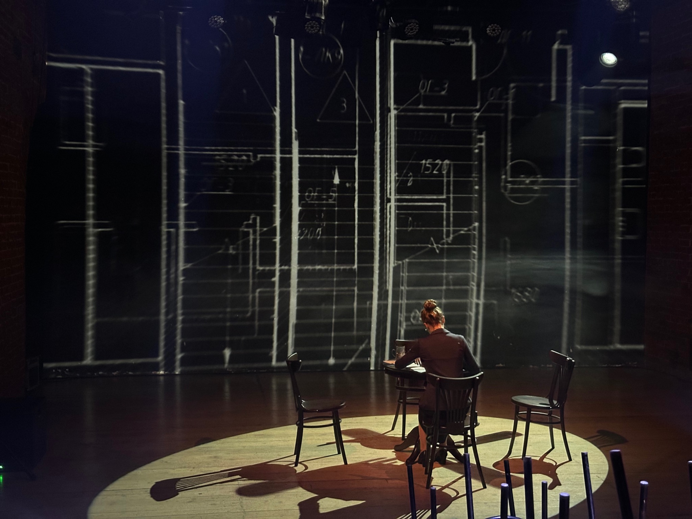
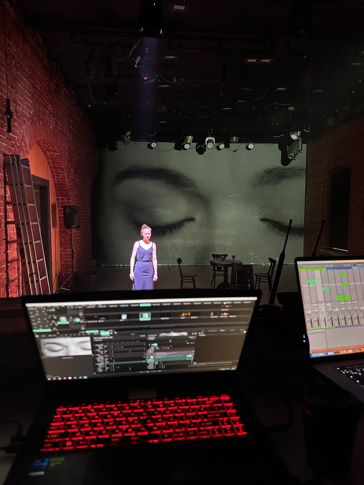

Прогулка в городе Т
Фестиваль «Горький+» · Нижний Новгород
июнь 2025
Автор идеи — Анастасия Егорова
Режиссёр — Дмитрий Сердюк
Видеохудожник
июнь 2025
Автор идеи — Анастасия Егорова
Режиссёр — Дмитрий Сердюк
Видеохудожник

О проекте
Проекция становится частью пространства прогулки и соединяет сценическое действие с визуальным образом города.

Фрагмент проектаkk_kitkate
Фрагмент проектаkk_kitkate
Анимацияkk_kitkate
Прогулка в городе Т
Все проекты →